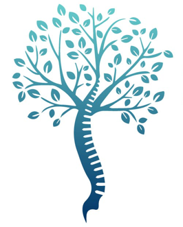

noindex lors de la publication.La colonne vertébrale lombaire (le bas du dos) est constituée de cinq vertèbres (L1 à L5) reposant sur le sacrum (S1). Elles sont séparées par des disques intervertébraux qui jouent le rôle d'amortisseurs. À l'arrière de ces disques se trouve le canal rachidien, qui contient les racines des nerfs se dirigeant vers vos jambes (formant le nerf sciatique ou le nerf crural). À l'avant des disques cheminent les plus gros vaisseaux du corps : l'aorte et la veine cave, qui se divisent en vaisseaux iliaques au niveau des derniers disques lombaires.
Dès l'âge de 25-30 ans, le disque se déshydrate, s'use et s'affaisse : c'est la discopathie. Cette dégénérescence est souvent lente, mais peut parfois s'accélérer et entraîner des micro-mouvements anormaux (instabilité) très douloureux. Si le disque s'abîme davantage, un fragment peut faire saillie (hernie discale) et venir comprimer un nerf.
Cela se traduit par de vives douleurs dans le bas du dos (lombalgies chroniques) et parfois par des douleurs irradiant dans les jambes (sciatique ou cruralgie).
Dans la majorité des cas, l'évolution naturelle et les traitements médicaux permettent de soulager les douleurs. Ces traitements conservateurs sont toujours essayés en première intention pendant plusieurs mois :
La chirurgie (l'arthrodèse) vous est proposée en cas d'échec complet des traitements médicaux, lorsque la douleur lombaire ou radiculaire devient invalidante au quotidien, ou en urgence en cas de troubles neurologiques sévères (perte de force dans la jambe, perte de sensibilité, ou syndrome de la queue de cheval).
L'approche par l'abdomen nécessite de passer très près des gros vaisseaux sanguins (l'aorte, la veine cave et les vaisseaux iliaques). Il vous sera prescrit un angio-scanner ou une angio-IRM avant l'opération pour « cartographier » votre anatomie vasculaire.
Cette intervention par l'avant peut être compliquée, voire contre-indiquée, dans les cas suivants :
ALIF signifie Anterior Lumbar Interbody Fusion (fusion intersomatique lombaire par voie antérieure). L'objectif est d'enlever le disque usé et de fixer définitivement les deux vertèbres ensemble (le plus souvent L4-L5 ou L5-S1) en abordant la colonne par devant. La soudure osseuse (fusion) se construit ensuite progressivement sur 6 à 12 mois ; en attendant, le matériel maintient les vertèbres en place.
Contrairement à l'abord classique par le dos, la voie antérieure permet d'accéder directement au disque sans sectionner les muscles du dos et sans manipuler les nerfs du canal rachidien. Elle permet aussi d'insérer une cale (cage) plus volumineuse, ce qui assure une bonne correction de la cambrure (lordose lombaire) et un taux de soudure osseuse élevé. En contrepartie, cet abord comporte des risques propres, vasculaires et digestifs, décrits au chapitre 5, et ne convient pas à toutes les situations.
Les douleurs sciatiques s'améliorent souvent rapidement, parfois dès le réveil. L'absence de section des muscles du dos rend cette chirurgie moins douloureuse sur le plan lombaire qu'une chirurgie postérieure. Les douleurs post-opératoires se situent principalement au niveau du ventre (comme de fortes courbatures) et s'estompent en quelques semaines. Des douleurs lombaires résiduelles peuvent persister, et les troubles de sensibilité ou de force anciens récupèrent parfois incomplètement.
L'opération ayant été réalisée par le ventre, vos muscles abdominaux sont sensibles. Or, conduire exige de pouvoir contracter fortement ses abdominaux lors d'un freinage d'urgence. La reprise de la conduite se fait généralement entre 3 et 6 semaines post-opératoires.
La fusion osseuse (soudure de la greffe) demande 6 à 12 mois pour être solide. Le sport doit être repris très progressivement pour ne pas risquer de faire bouger la cage ou de créer une éventration abdominale. Ces repères sont ajustés à votre cas lors du suivi.
| Délai post-opératoire | Sports autorisés | Conditions et précautions |
|---|---|---|
| 0 à 6 semaines | Marche à pied | C'est votre seule rééducation. Marchez tous les jours à votre rythme avec de bonnes chaussures. |
| 2 à 3 mois (Sports doux / portés) | Vélo d'appartement Natation | - Vélo : Guidon haut pour garder le dos droit et ne pas comprimer le ventre. - Natation : Dos crawlé ou crawl. Évitez la brasse classique qui vous oblige à cambrer le dos et étire trop vos abdominaux en cicatrisation. |
| 3 à 6 mois (Sports modérés / asymétriques) | Course à pied Vélo de route Golf Tennis (léger) | Reprise très progressive. Le swing de golf doit être adapté avec un professionnel pour réduire la torsion du buste. Nécessite le feu vert lors de la consultation de contrôle. |
| 6 à 12 mois et + (Sports d'impact / contact) | Ski alpin Sports collectifs (foot, rugby) Sports de combat | Après confirmation de la consolidation osseuse sur un scanner ou une radiographie, et accord du chirurgien. |
L'arrêt de travail est de 1 à 2 mois en moyenne pour un emploi sédentaire (bureau), et d'environ 3 mois pour une profession physique (manutention, BTP, soins). Ces durées sont très variables selon la profession, le temps de trajet et les possibilités de télétravail, qui permet souvent une reprise plus précoce. Une visite de pré-reprise avec le médecin du travail est conseillée pour aménager votre poste ou limiter le port de charges lourdes.
| Signe d'alerte observé | Action à entreprendre |
|---|---|
| Malaise, pâleur, ventre brutalement tendu et très douloureux, ou saignement important par la cicatrice | URGENCE ABSOLUE (Appelez le 15) Suspicion d'hémorragie ou d'hématome profond. |
| Jambe gonflée, douloureuse ou tendue, ou jambe pâle et froide | URGENCE Suspicion de phlébite ou de trouble de la circulation. |
| Essoufflement brutal, douleur thoracique | URGENCE ABSOLUE (Appelez le 15) Suspicion d'embolie pulmonaire. |
| Vomissements répétés, ventre très distendu, absence prolongée de gaz et de selles | Consulter très rapidement Suspicion d'occlusion intestinale. |
| Fièvre > 38,5 °C, cicatrice très rouge ou écoulement purulent, douleur inhabituelle | Consulter très rapidement Suspicion d'infection. Ne prenez pas d'antibiotiques sans avis médical. |
| Déficit moteur brutal dans une jambe, anesthésie de la zone génitale, fuites ou blocage urinaires | URGENCE ABSOLUE (Appelez le 15) Suspicion de compression nerveuse. |
| Apparition d'une boule sous la cicatrice, surtout à l'effort | Consulter Suspicion d'éventration. |
En cas de doute : contactez votre chirurgien ou présentez-vous aux urgences.
L'accès par l'abdomen permet de retirer tout le disque usé et d'insérer une cale (cage) de grande taille sans couper les muscles du dos ni manipuler les nerfs. Cela assure une bonne solidité et une bonne correction de la cambrure naturelle de votre colonne. Cette voie a aussi des risques propres, vasculaires et digestifs, et le choix de l'abord dépend de votre anatomie et de votre indication.
Les plus gros vaisseaux du corps humain (l'aorte et la veine cave) cheminent exactement devant les vertèbres lombaires. Le chirurgien vasculaire les décolle et les protège (chirurgie à quatre mains) pendant que le spécialiste du rachis travaille sur le disque, et il peut réparer immédiatement un vaisseau en cas de blessure. Sa présence réduit ce risque sans le supprimer.
L'incision est relativement petite (environ 5 à 10 cm). Pour les disques bas (L5-S1), elle est souvent horizontale et esthétiquement cachée sous la ligne des sous-vêtements (façon césarienne). Pour les disques plus hauts (L4-L5), elle peut être située sur le flanc gauche ou verticalement sous le nombril.
Les patients sont souvent surpris d'avoir peu mal au dos. En revanche, l'écartement des muscles abdominaux provoque des douleurs sur le devant du ventre, comparables à de fortes courbatures après une séance intense d'abdominaux. Ces douleurs s'estompent avec les antalgiques classiques en quelques semaines. Signalez une douleur insuffisamment soulagée.
Oui, c'est très fréquent (iléus paralytique). Vos intestins ayant été manipulés et repoussés, ils se « mettent en veille » pendant 48 à 72 h. Vous aurez le ventre gonflé (ballonnements) et des difficultés à émettre des gaz. La marche précoce dans les couloirs de la clinique est le meilleur remède pour relancer la digestion. Signalez en revanche des vomissements, un ventre très douloureux ou distendu, ou une absence prolongée de reprise du transit.
L'érection dépend d'autres nerfs que ceux qui passent dans la zone opérée : une atteinte de l'érection n'est pas attendue après une ALIF, même si aucun risque ne peut être présenté comme impossible. Chez l'homme (pour 1 à 5 % des opérations du niveau L5-S1), le petit réseau nerveux écarté pendant l'opération peut causer une « éjaculation rétrograde » : au moment de l'orgasme, le sperme est renvoyé dans la vessie au lieu d'être expulsé. Cela régresse parfois avec le temps, mais peut causer une infertilité. Signalez tout projet parental avant l'intervention : un recueil de sperme en laboratoire (CECOS) peut vous être proposé.
C'est le plus souvent la conséquence d'un « étirement sympathique ». Le petit nerf qui gère le calibre de vos vaisseaux sanguins passe sur la colonne vertébrale ; lorsqu'il est écarté, les vaisseaux de votre jambe gauche se dilatent légèrement : la jambe devient plus chaude, parfois un peu rouge. Cet effet est bénin et s'atténue avec le temps. Mais une jambe gonflée, douloureuse ou tendue peut aussi être une phlébite : signalez tout gonflement ou douleur du mollet, et appelez le 15 en cas d'essoufflement ou de douleur thoracique.
Le risque de paralysie est exceptionnel avec l'ALIF. L'avantage de passer par l'avant est que le chirurgien ne pénètre pas dans le canal rachidien (qui se trouve à l'arrière des vertèbres), où passent les nerfs des jambes. Des atteintes de petits nerfs de la paroi abdominale ou de la cuisse restent possibles : fourmillements ou perte de sensibilité, le plus souvent transitoires.
Au début de votre convalescence, tousser ou éternuer va tirer sur vos abdominaux et peut être douloureux. Le bon réflexe : pliez légèrement les genoux et plaquez un coussin contre votre ventre au moment de tousser pour soutenir la paroi abdominale. Soyez rassuré(e), vous n'allez pas « déchirer » vos sutures internes.
Évitez de vous redresser « façon abdominaux » (en pliant le ventre en avant). Utilisez la technique du « bloc » : tournez-vous sur le côté (épaules et bassin en même temps), laissez descendre vos jambes hors du lit, et poussez sur vos bras pour vous redresser en gardant le dos bien droit. L'équipe vous la montre avant la sortie.
Le plus souvent oui. Votre chirurgien vous prescrit un corset lombaire (sur mesure ou de série), à porter principalement en journée, lorsque vous êtes actif(ve) ou en voiture, pendant 1 à 3 mois. Il limite les torsions de votre dos le temps que la greffe osseuse prenne solidement. Votre chirurgien en précise la durée selon le montage réalisé.
L'incision à travers les muscles abdominaux crée une petite zone de faiblesse cicatricielle. Le risque d'éventration (l'apparition d'une « boule » ou hernie sous la peau due à un écartement des muscles) est faible mais réel, d'où l'importance de ne pas porter de charges lourdes et de ne pas forcer sur ses abdominaux les premiers mois.
Les implants (vis, plaque, cage) en titane ou en polymère (PEEK) ne déclenchent généralement pas les portiques, mais un implant métallique peut être détecté : gardez votre carte d'implant ou votre compte rendu opératoire. L'IRM est en général possible, mais ses conditions dépendent du modèle d'implant : prévenez le radiologue et présentez votre carte d'implant.
Le matériel fixe solidement votre colonne dès le jour de l'opération, mais la vraie « fusion biologique » (la repousse de l'os à travers la cage) prend beaucoup plus de temps : entre 6 et 12 mois. C'est pour cela que les activités à impact sont déconseillées la première année, jusqu'au contrôle de la consolidation.
Non. Ce n'est pas la fumée qui pose problème pour la greffe osseuse, c'est la nicotine, qu'elle soit fumée ou vapotée : elle resserre les micro-vaisseaux sanguins et prive l'os en formation de sa circulation. L'arrêt total est recommandé au moins 6 semaines avant et 3 mois après l'intervention. Votre équipe peut vous orienter vers une aide au sevrage ; la place des substituts nicotiniques (patchs, gommes) se discute avec votre chirurgien.
Le plus souvent oui. Des injections d'anticoagulant préventif sont prescrites selon votre risque, parfois poursuivies à domicile, en complément des bas de contention et de la marche. Elles évitent la formation de caillots dans les veines des jambes (phlébite, embolie pulmonaire), un risque réel après une chirurgie abdominale.
Vous pouvez dormir dans la position qui vous est la plus confortable (sur le dos, le côté ou même le ventre si l'appui sur la cicatrice ne vous gêne pas). Si vous dormez sur le dos, placez un petit coussin sous vos genoux pour « décambrer » les lombaires et détendre votre ventre.
Pour un seul niveau, souvent déjà enraidi par l'arthrose, la perte de souplesse est peu perceptible au quotidien : vos hanches, vos genoux et les autres vertèbres compensent pour vous permettre de vous pencher en avant. Lorsque plusieurs niveaux sont fusionnés, la raideur est plus sensible.
Tant que la fusion osseuse n'est pas acquise, il est fréquent de ressentir ou d'entendre de petits « claquements » ou craquements dans les vertèbres situées juste au-dessus ou en dessous du montage. Un bruit isolé, sans douleur, n'indique pas un problème de matériel. Signalez en revanche un bruit accompagné d'une douleur nouvelle, d'une perte de force, ou survenu après une chute.
Le premier mois, aucune kinésithérapie n'est nécessaire ; la marche est votre seule alliée. Vers 6 à 8 semaines, une rééducation douce (étirements, apprentissage du verrouillage lombaire, gainage isométrique doux) pourra débuter sur prescription de votre chirurgien.
Cette fiche a été remise et commentée au cours de la consultation. J'atteste en avoir pris connaissance, avoir pu poser les questions que je souhaitais et avoir obtenu des réponses satisfaisantes. J'ai compris la nature de l'intervention (arthrodèse lombaire par voie antérieure, ALIF), l'importance de l'arrêt du tabac et de la nicotine pour la fusion osseuse, ainsi que les risques spécifiques liés à cet abord abdominal (risques vasculaires graves justifiant la présence d'un chirurgien vasculaire, risques de lésions digestives ou d'éventration, risques neurologiques locaux comme l'éjaculation rétrograde chez l'homme ou la sensation de jambe chaude) et les risques généraux qui m'ont été exposés.
Date de remise du document au patient(e) :
Nom et prénom du patient : ________________________________
Date et signature du patient(e) : ________________________________